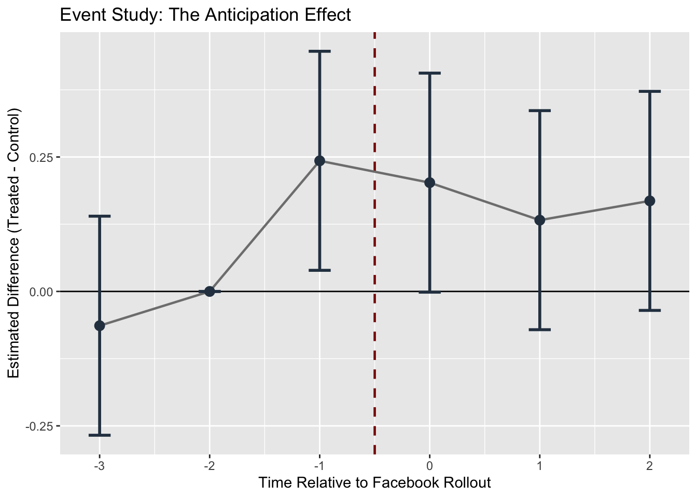

This portfolio directly builds off portfolio #6, where we simulated a diff-in-diff (DiD) and compared results to a naive OLS regression. Here, we’ll be doing an event study (to check for parallel trends and post-treatment variation).
library(ggplot2)
library(tidyverse)
library(broom)
COL_BIAS <- "#E41A1C" # red — biased / confounded
COL_DID <- "#377EB8" # blue — DiD / identified
COL_DIMMED <- "#BBBBBB" # gray — dimmed paths
COL_TRUE <- "#333333" # dark gray — true effect line
# this is the exact same as last portfolio.
simulate_did <- function(N = 200, delta = 0.085, gamma_u = 0.30,
gamma_w = 0.15, time_trend = 0.05, seed = NULL) {
if (!is.null(seed)) set.seed(seed)
n_treat <- N / 2
n_ctrl <- N / 2
# College-level variables (time-invariant)
U <- rnorm(N)
W <- rnorm(N)
Treat <- rep(c(1, 0), each = n_treat)
# 6-period timeline
periods <- 1:6
treat_time <- 4
df <- expand.grid(college = 1:N, period = periods) %>%
mutate(
U = U[college],
W = W[college],
Treat = Treat[college],
# The simple Pre/Post buckets for the standard DiD math
Post = as.integer(period >= treat_time),
D = Treat * Post
)
# Generate the behavioral outcomes
df <- df %>%
mutate(
e_sm = rnorm(n(), 0, 0.5),
e_mh = rnorm(n(), 0, 0.5),
SM = gamma_w * W + gamma_u * U + D + e_sm,
MH = delta * SM + gamma_u * U + gamma_w * W + time_trend * (period - 1) + e_mh
)
return(df)
}
# Generate a baseline dataset so we have something to run the event study on!
set.seed(471)
df_portfolio_7 <- simulate_did(N = 200)In the previous portfolio, we simulated a DiD and estimated our results using a single one interaction term (i.e., the diff-in-diff for the average post-treatment vs. average pre-treatment). Here, with an event study, we can look specifically at the DiD estimates (i.e., the interaction term) for each specific period. At the end of last portfolio, we simulated a DiD with 6 time periods (3 pre-treatment and 3 post-treatment). An event study can do at least these two things: 1) statistically check for the parallel trends assumption and 2) see the coefficients (for the effect of social media access on mental health) and whether they change over time in the three post-treatment periods.
To look at the interaction term for each of the 6 periods, we first have to make a “relative time” variable that’s centered around the treatment.
event_data <- df_portfolio_7 %>%
mutate(
# This converts period 3 to -1, period 4 to 0, etc. since FB comes at period 4.
rel_time = period - 4,
# Set the period just before treatment (-1) as the reference level
rel_time_f = relevel(as.factor(rel_time), ref = "-1")
)Next, we can run the event study! We now have interaction terms based on the relative time factors so we can see the period-by-period effect (of social media on MH). We should have an interaction term for each time.
To assess the parallel trends assumption, we are interested in the pre-treatment interactions (i.e., treat x time -3, treat x time -2). Since we set relative time -1 (or period 3) as the reference group, these interaction terms tell us how the gap between the control and treatment groups changed relative to the gap for period 3.
event_reg <- lm(MH ~ Treat * rel_time_f + W + U, data = event_data)
summary(event_reg)##
## Call:
## lm(formula = MH ~ Treat * rel_time_f + W + U, data = event_data)
##
## Residuals:
## Min 1Q Median 3Q Max
## -1.96512 -0.35759 -0.00236 0.35391 1.60140
##
## Coefficients:
## Estimate Std. Error t value Pr(>|t|)
## (Intercept) 0.148366 0.051953 2.856 0.00437 **
## Treat 0.010201 0.073488 0.139 0.88962
## rel_time_f-3 -0.112156 0.073410 -1.528 0.12683
## rel_time_f-2 -0.082589 0.073410 -1.125 0.26080
## rel_time_f0 -0.017666 0.073410 -0.241 0.80987
## rel_time_f1 0.003764 0.073410 0.051 0.95911
## rel_time_f2 0.037693 0.073410 0.513 0.60773
## W 0.157246 0.015663 10.039 < 2e-16 ***
## U 0.322990 0.014546 22.205 < 2e-16 ***
## Treat:rel_time_f-3 -0.106676 0.103817 -1.028 0.30438
## Treat:rel_time_f-2 -0.042940 0.103817 -0.414 0.67923
## Treat:rel_time_f0 0.159368 0.103817 1.535 0.12503
## Treat:rel_time_f1 0.089609 0.103817 0.863 0.38824
## Treat:rel_time_f2 0.125473 0.103817 1.209 0.22706
## ---
## Signif. codes: 0 '***' 0.001 '**' 0.01 '*' 0.05 '.' 0.1 ' ' 1
##
## Residual standard error: 0.5191 on 1186 degrees of freedom
## Multiple R-squared: 0.3595, Adjusted R-squared: 0.3525
## F-statistic: 51.21 on 13 and 1186 DF, p-value: < 2.2e-16This is one of many ways to test the assumption. We can see that the p-values for the pre-treatment interaction terms are not statistically significant. That’s good news! This means that the trends between control and treatment groups before the treatment do not statistically differ. The parallel trends assumption is therefore satisfied.
Next, we can extract the coefficients and visually look at the event study we just conducted!
# Uses broom. very neat way to get the estimates, SEs, p-values, and conf intervals!
event_coefs <- tidy(event_reg, conf.int = TRUE) %>%
filter(grepl("Treat:rel_time_f", term)) %>%
mutate(
# takes away the text prefix so we just have the number.
time = as.numeric(gsub("Treat:rel_time_f", "", term)),
period_type = ifelse(time < 0, "Pre-trend (should be zero)", "Treatment Effect")
)
# Add reference period (t = -1) as exactly 0 so we can plot it too
ref_row <- data.frame(
term = "Treat:rel_time_f-1",
estimate = 0, conf.low = 0, conf.high = 0, time = -1,
period_type = "Pre-trend (should be zero)"
)
event_coefs <- bind_rows(event_coefs, ref_row)
# Here we manually inject the baseline period (t = -1) back into the data, because it was used as the reference group.
ref_row <- data.frame(time = -1, estimate = 0, conf.low = 0, conf.high = 0)
event_coefs <- bind_rows(event_coefs, ref_row) %>%
arrange(time)
# Event Study Plot
fig_event <- ggplot(event_coefs, aes(x = time, y = estimate)) +
geom_hline(yintercept = 0, color = "black", linewidth = 0.5) + # this is the baseline (0)
geom_vline(xintercept = -0.5, color = "darkred", linetype = "dashed", linewidth = 0.8) + # vertical treatment line
geom_line(color = "gray50", linewidth = 0.8) + # connect dots so the trend is obvious
geom_errorbar(aes(ymin = conf.low, ymax = conf.high), width = 0.2, color = "#2c3e50", linewidth = 1) +
geom_point(size = 3, color = "#2c3e50") +
# Simplified labels
labs(
title = "Event Study: Checking Parallel Trends",
x = "Time Relative to Facebook Rollout",
y = "Estimated Difference (Treated - Control)"
) As we see from the error bars, they all (even post-treatment!) overlap with 0. With an event study, to check for parallel trends, we only care about the pre-treatment trends (i.e., whether these interaction term estimates overlap with 0). We can also look at the post-treatment changes. It seems like with this event study, the estimates don’t meaningfully differ from 0 too. But the point is, with an event study, we can see whether there are differences between post-treatment time periods (e.g., does SM take a while to have an effect on MH? Are effects on MH more prominent in later periods?)
At last, we can quickly see what it would look like when the parallel trends assumption is violated. Let’s say that there’s “anticipation effects”, where colleges that have not yet received the rollout of Facebook have developed FOMO (fear of missing out) as they anticipate the social media platform’s availability. Here, the anticipation in the control group (before treatment) will affect our dependent variable early!
df_anticipation <- df_portfolio_7 %>%
mutate(
# Rumors about Facebook start in Period 3 (t = -1).
# We artificially bump mental health up by 0.20 for the treated group early.
MH = ifelse(Treat == 1 & period == 3, MH + 0.20, MH)
)We can now set up the event study and run the relevant regressions
event_data_anti <- df_anticipation %>%
mutate(
rel_time = period - 4,
rel_time_f = relevel(as.factor(rel_time), ref = "-2") # use baseline as -2 since -1 is shifted
)
reg_anti <- lm(MH ~ Treat * rel_time_f + W + U, data = event_data_anti)
summary(reg_anti)##
## Call:
## lm(formula = MH ~ Treat * rel_time_f + W + U, data = event_data_anti)
##
## Residuals:
## Min 1Q Median 3Q Max
## -1.96512 -0.35759 -0.00236 0.35391 1.60140
##
## Coefficients:
## Estimate Std. Error t value Pr(>|t|)
## (Intercept) 0.06578 0.05195 1.266 0.2057
## Treat -0.03274 0.07349 -0.446 0.6560
## rel_time_f-3 -0.02957 0.07341 -0.403 0.6872
## rel_time_f-1 0.08259 0.07341 1.125 0.2608
## rel_time_f0 0.06492 0.07341 0.884 0.3767
## rel_time_f1 0.08635 0.07341 1.176 0.2397
## rel_time_f2 0.12028 0.07341 1.638 0.1016
## W 0.15725 0.01566 10.039 <2e-16 ***
## U 0.32299 0.01455 22.205 <2e-16 ***
## Treat:rel_time_f-3 -0.06374 0.10382 -0.614 0.5394
## Treat:rel_time_f-1 0.24294 0.10382 2.340 0.0194 *
## Treat:rel_time_f0 0.20231 0.10382 1.949 0.0516 .
## Treat:rel_time_f1 0.13255 0.10382 1.277 0.2019
## Treat:rel_time_f2 0.16841 0.10382 1.622 0.1050
## ---
## Signif. codes: 0 '***' 0.001 '**' 0.01 '*' 0.05 '.' 0.1 ' ' 1
##
## Residual standard error: 0.5191 on 1186 degrees of freedom
## Multiple R-squared: 0.3632, Adjusted R-squared: 0.3562
## F-statistic: 52.03 on 13 and 1186 DF, p-value: < 2.2e-16We can see that the interaction term for time -1 is now statistically significant! The gap between treated and control for time -1 is statistically different to time -2 (our baseline). Let’s use the same plot as before and see the difference!
coefs_anti <- tidy(reg_anti, conf.int = TRUE) %>%
filter(grepl("Treat:rel_time_f", term)) %>%
mutate(time = as.numeric(gsub("Treat:rel_time_f", "", term))) %>%
select(time, estimate, conf.low, conf.high)
ref_row_anti <- data.frame(time = -2, estimate = 0, conf.low = 0, conf.high = 0)
coefs_anti <- bind_rows(coefs_anti, ref_row_anti) %>% arrange(time)
ggplot(coefs_anti, aes(x = time, y = estimate)) +
geom_hline(yintercept = 0, color = "black", linewidth = 0.5) +
geom_vline(xintercept = -0.5, color = "darkred", linetype = "dashed", linewidth = 0.8) +
geom_line(color = "gray50", linewidth = 0.8) +
geom_errorbar(aes(ymin = conf.low, ymax = conf.high), width = 0.2, color = "#2c3e50", linewidth = 1) +
geom_point(size = 3, color = "#2c3e50") +
labs(
title = "Event Study: The Anticipation Effect",
x = "Time Relative to Facebook Rollout",
y = "Estimated Difference (Treated - Control)"
)
The anticipation effect looks like quite a sudden jump, but this clearly shows the violation of parallel trends! Next lab, we’ll do some Monte Carlo simulations for robustness checks with the SM -> MH example.